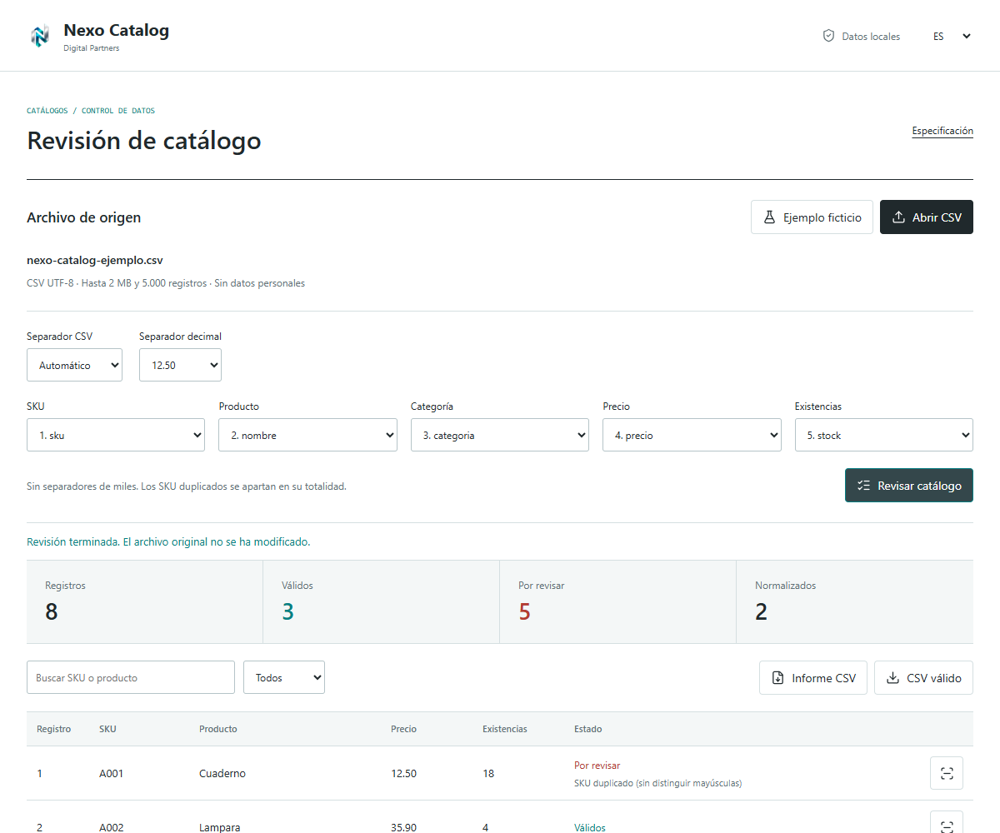
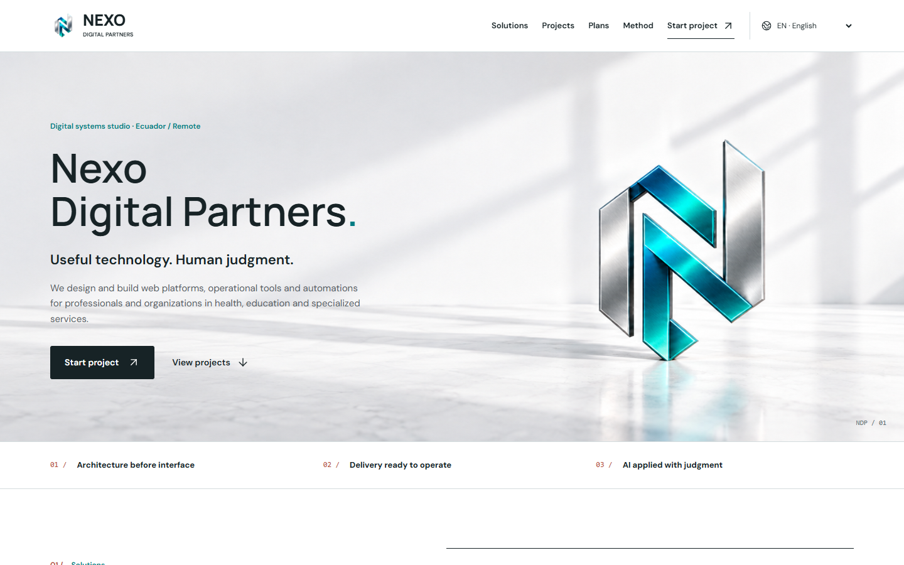

Proyectos propios, explicados por dentro: qué resuelven, cómo funcionan y hasta dónde llegan. No son casos de éxito de clientes.
01 / Calidad de datos / Herramienta funcional
Nexo Catalog
Revisar un CSV antes de llevar sus datos a otra herramienta.

Interfaz real, datos de ejemplo ficticios. Sin información de clientes.
El problema
Un código de producto repetido o un precio con formato inconsistente pueden viajar con tu hoja de cálculo. Detectarlos antes de importar permite corregir el origen.
La solución
Una herramienta de revisión en el navegador: asignar columnas, consultar incidencias y exportar un informe o los registros que cumplen las reglas. El CSV se procesa localmente, no se envía a Nexo.
Prueba el recorrido
Abre la herramienta y carga el ejemplo ficticio.
Revisa la asignación de columnas y ejecuta la revisión.
Consulta un código duplicado y compara el informe con la exportación de registros válidos.
Resultado observable
El ejemplo incluido tiene 8 registros: 3 cumplen las reglas y 5 necesitan revisión. Esto demuestra las comprobaciones, no una mejora comercial medida.
Ayudar a entender la propuesta en otro idioma y encontrar el siguiente paso.

Versión real en inglés de la web principal.
El problema
Una visita internacional necesita más que palabras traducidas: un selector visible, navegación legible y una ruta clara para contactar.
La solución
La web principal admite 12 idiomas, toma la preferencia del navegador, recuerda la selección y permite compartir enlaces con un idioma concreto. Árabe y hebreo usan presentación de derecha a izquierda.
Prueba el recorrido
Abre la versión en inglés desde el enlace inferior.
Elige otro idioma y recarga para comprobar la preferencia.
Prueba árabe o hebreo y revisa la navegación en una pantalla estrecha.
Evidencia técnica
Las pruebas automáticas de interfaz cubren 12 idiomas en 6 anchos, incluida la persistencia, selección por URL y cabecera. No equivalen a revisión lingüística nativa ni demuestran un aumento de ventas.
Del inventario disponible a una cotización, sin saltar entre listas.
Captura del proyecto más amplio. La demo pública enlazada solo cubre inventario y cotizaciones con registros sintéticos.
El problema
Preparar una cotización requiere consultar existencias y mantener producto, cantidad y precio juntos. Los archivos separados dificultan seguir ese recorrido.
Decisión de diseño
Mantener inventario y preparación de cotizaciones en un espacio de trabajo. Una versión pública reducida permite explorar el recorrido sin exponer registros del negocio.
Prueba el recorrido
Abre la demo, consulta los tres productos de muestra y pasa a la vista de cotización. Los valores son ficticios. No es una instalación del sistema completo.
Qué requiere una entrega a cliente
Acordar reglas de precios, formatos, almacenamiento, respaldo y recuperación; después validar casos normales y de error. Cobros, documentos, usuarios e integraciones son alcances separados, no prestaciones incluidas por esta demo.
Ejemplo técnico de captura de puntuaciones, gráficos y composición de documentos. No se ofrece como software clínicamente validado ni como servicio diagnóstico o pericial.
El portafolio público presenta primero el alcance en lugar de enviar directamente a una pantalla de evaluación.